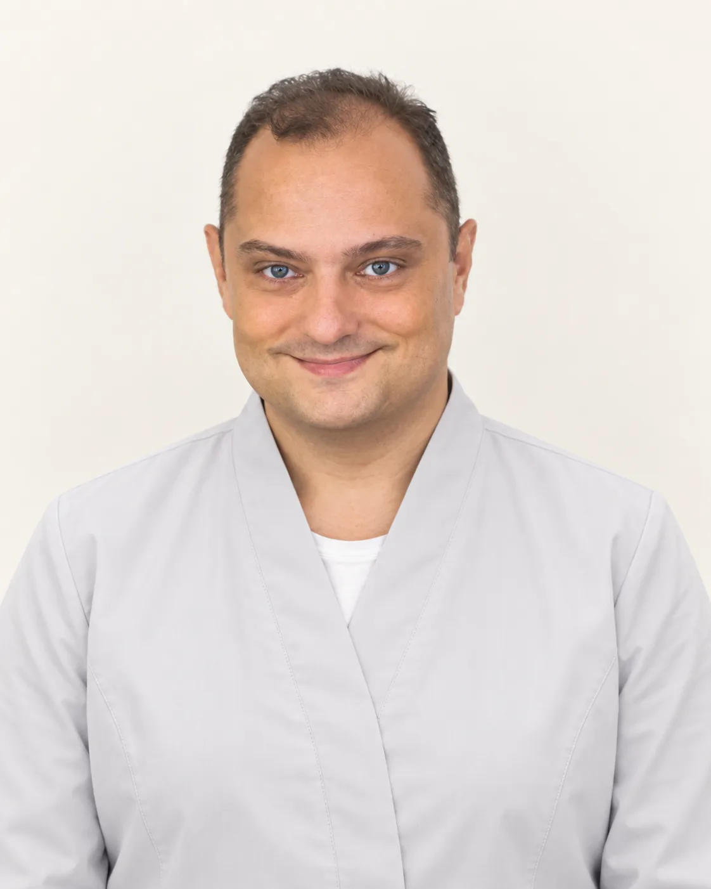
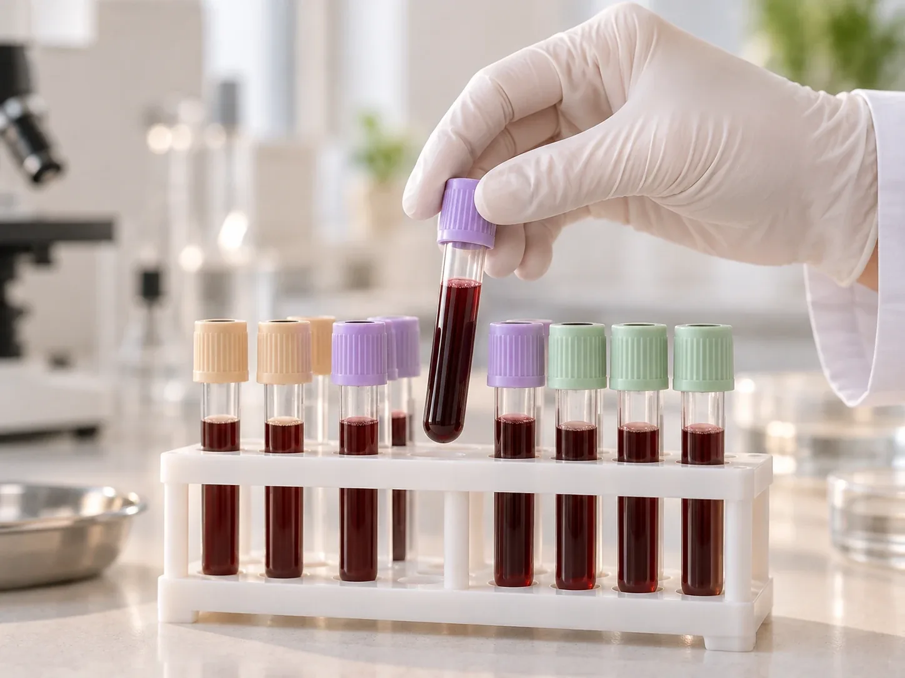
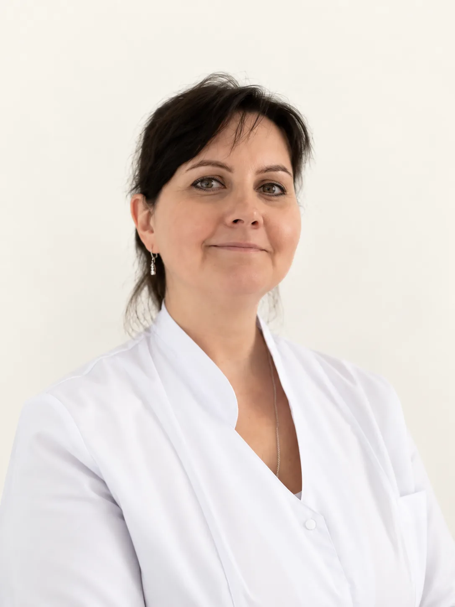

МаксимовМаксим Леонидович
Врач-терапевт · клиническая фармакология
Терапия, клиническая фармакология, безопасность и коррекция лекарственной терапии
- Опыт
- более 25 лет
Самочувствие и лечение
Гормоны щитовидной железы, женские гормоны, кортизол, инсулин: какие сдавать и когда, решает врач по жалобам.
Анализы на гормоны назначает терапевт или эндокринолог клиники. Приём стоит 5 000 ₽.

Анализы на гормоны – это анализ крови, который показывает, как работают щитовидная железа, надпочечники, яичники или яички и поджелудочная железа. Какие анализы на гормоны нужны именно вам, решит терапевт или эндокринолог клиники 8.0.8 в Москве, у метро «Римская». Записаться на приём можно ежедневно с 9:00 до 21:00.
Поводом обычно становятся жалобы: усталость, изменение веса, нарушения цикла, выпадение волос, акне, сердцебиение, проблемы со сном. Иногда их назначают для контроля лечения.
Сдать «все гормоны сразу» почти никогда не нужно. Многие гормоны зависят от дня цикла, времени суток, лекарств и стресса. Анализ, сданный не вовремя, даёт отклонение, которое потом приходится перепроверять.
Приём терапевта и приём эндокринолога стоят по 5 000 ₽. Стоимость анализов, подготовку и сроки готовности уточнит администратор.
После приёма и разбора анализов вы будете понимать:
Уровень женских гормонов меняется в течение цикла. Один и тот же результат может быть нормой в один день и отклонением в другой. Поэтому день сдачи важен не меньше, чем сам анализ. Обычно ориентируются так:
Если вы принимаете гормональные контрацептивы, многие показатели будут изменены. Скажите об этом врачу до назначения анализов: иногда анализы на женские гормоны на фоне таблеток мало что покажут.
Гормоны щитовидной железы. Начинают с ТТГ, это главный анализ. Если он изменён, врач смотрит Т4 свободный, иногда Т3 свободный и антитела к ТПО. Эти анализы можно сдавать в любой день цикла, обычно утром.
Анализ на кортизол. Кортизола больше всего утром и меньше вечером, а при стрессе, недосыпе и болезни он растёт. Поэтому кровь сдают в определённое время и в спокойном состоянии. Кроме крови, врач может назначить анализ слюны или суточной мочи: выбор зависит от того, что нужно проверить.
Инсулин. Его сдают строго натощак, обычно вместе с глюкозой. По двум показателям рассчитывают индекс HOMA. Повышенный инсулин натощак бывает при инсулинорезистентности. Она часто сопровождает лишний вес в области живота и повышает риск сахарного диабета 2 типа.
Гормонов много, и почти каждый зависит от условий сдачи. Цифра на бланке и норма лаборатории ещё не диагноз. Небольшое отклонение часто ничего не значит, а результат «в норме» не всегда объясняет жалобы.
Врач начинает с разговора и осмотра, назначает короткий список анализов и затем объясняет результат вместе с другими данными.
Мужчинам анализы на гормоны назначают так же, по жалобам: при снижении энергии и либидо, изменении веса, плохом сне. Чаще всего это тестостерон, гормоны щитовидной железы, глюкоза и инсулин.

Врач-терапевт · клиническая фармакология
Терапия, клиническая фармакология, безопасность и коррекция лекарственной терапии

Врач-терапевт
Диагностика, лечение и профилактика заболеваний внутренних органов; бронхолёгочные заболевания
Их стоимость уточнит администратор. Приём терапевта или эндокринолога, который назначит анализы и разберёт результаты, стоит 5 000 ₽.
По телефону +7 (938) 099-30-09, ежедневно с 9:00 до 21:00.
Начните с приёма врача в клинике 8.0.8: Москва, ул. Сергия Радонежского, 15–17, стр. 2, этаж 1, рядом станции метро «Римская» и «Площадь Ильича». Как сдать назначенные анализы, подскажет администратор.
Это зависит от жалоб. При усталости и изменении веса чаще проверяют ТТГ и Т4 свободный, при нарушениях цикла смотрят ФСГ, ЛГ, эстрадиол, пролактин, прогестерон, а при акне ещё и тестостерон. Точный список составит врач.
Большинство сдают со 2-го по 5-й день цикла, а прогестерон во второй половине цикла. Гормоны щитовидной железы можно сдавать в любой день. При нерегулярном цикле день определит врач.
Обычно утром, в спокойном состоянии, после отдыха. Время и способ сдачи (кровь, слюна или моча) определит врач: кортизол сильно меняется в течение суток.
Обычно да, утром через 8–12 часов после еды. Для инсулина это обязательно. Воду без газа пить можно.
Начинают с ТТГ. По показаниям добавляют Т4 свободный, Т3 свободный и антитела к ТПО.
Какие исследования нужны, определит врач на приёме. Так вы не потратите время и деньги на лишнее и сдадите анализы в правильный день.
Имеются противопоказания. Необходима консультация специалиста.